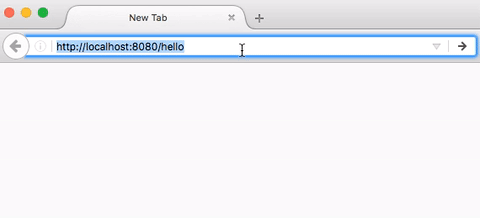

This post walks you through the process of creating a Hello World example with Spring Boot, FreeMarker.
Hello Spring Boot Series: - Spring Boot Hello World Example with FreeMarker - Spring Boot Hello World Example with Thymeleaf - Spring Boot Hello World Example with JSP
What you'll build

What you'll need
- JDK 1.7 or later
- Maven 3 or later
Stack
- Spring Boot
- Java
Project structure
├── src
│ └── main
│ ├── java
│ │ └── com
│ │ └── hellokoding
│ │ └── springboot
│ │ ├── HelloController.java
│ │ └── WebApplication.java
│ ├── resources
│ │ └── application.properties
│ └── webapp
│ ├── hello.ftl
│ └── index.html
└── pom.xml
Project dependencies
Hello Controller
Controller maps HTTP Requests with View.
@RequestMapping maps /hello request to hello() method.
name is a query string parameter of /hello request.
Model object passes value to hello view (hello.ftl).
View Template
Application Configuration
Run
mvn spring-boot:run
Source code
git@github.com:hellokoding/springboot-freemarker.git
https://github.com/hellokoding/springboot-freemarker.git
You may also like the Hello Spring MVC Series: - Spring MVC 4 Hello World Example with XML Configuration, Maven and JSP - Spring MVC 4 Hello World Example with XML Configuration, Maven, and Thymeleaf